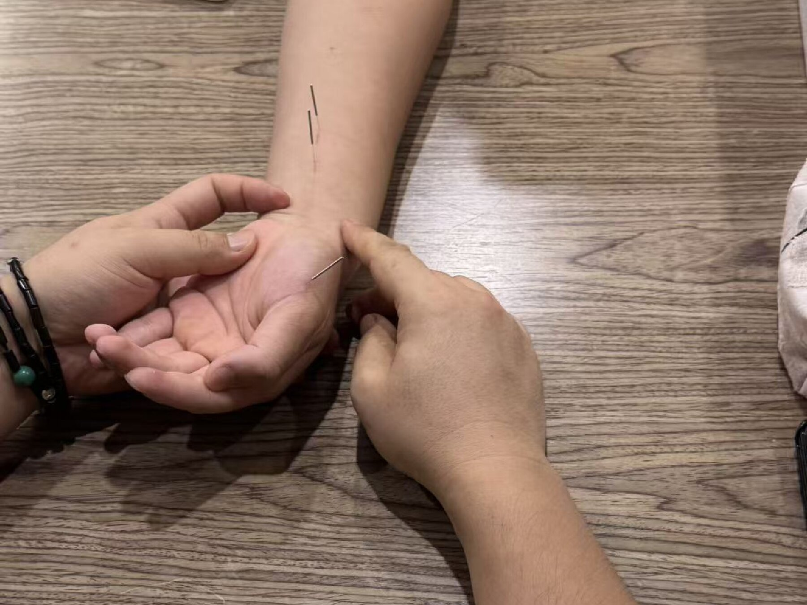
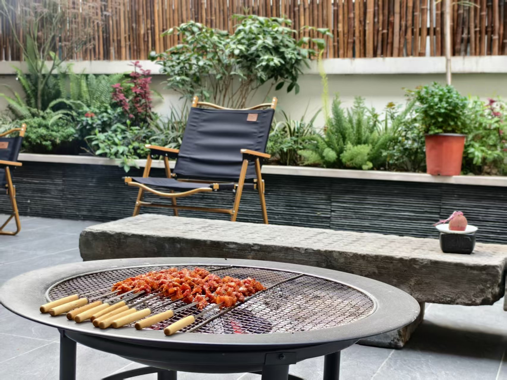
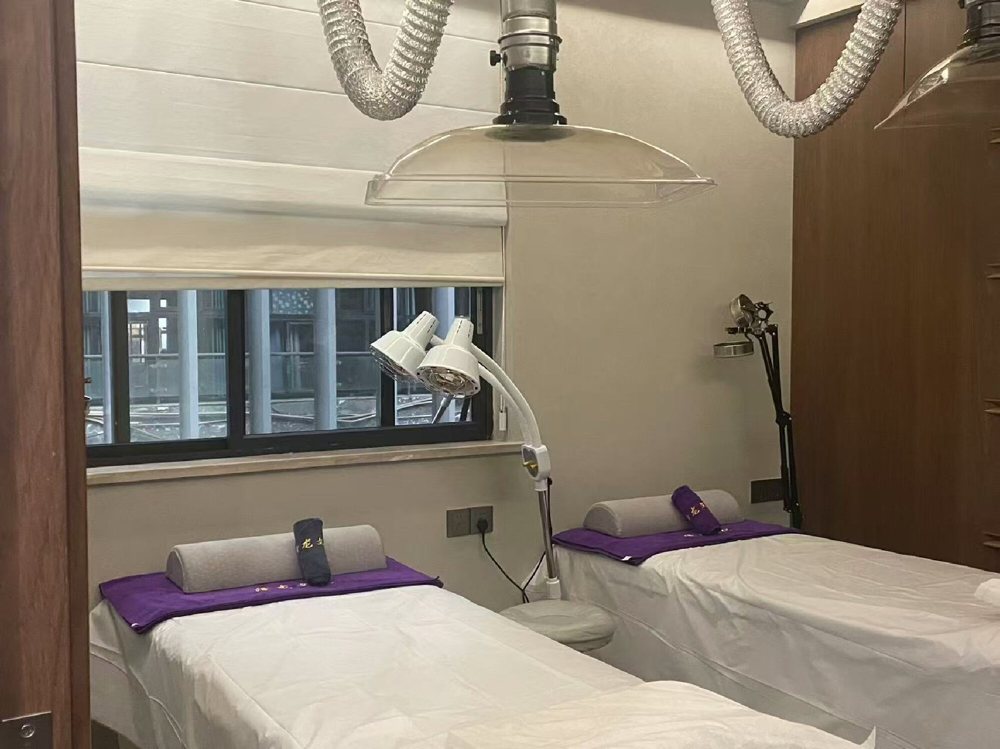
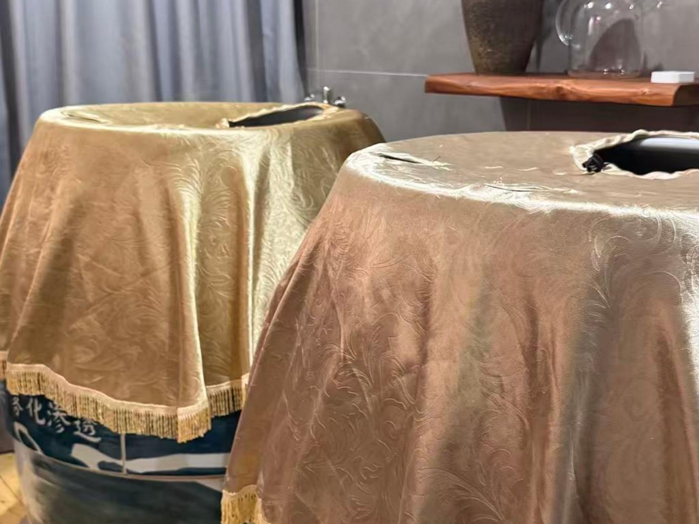

小小中医班首课圆满礼成：让岐黄薪火从童蒙延续
稚子启蒙，初窥岐黄之道。通过拍八虚、识五脏等体验，让传统中医文化以可亲近的方式走进孩子们的日常。

稚子启蒙，初窥岐黄之道。通过拍八虚、识五脏等体验，让传统中医文化以可亲近的方式走进孩子们的日常。

讲机理、述原理、传技法、重实操，让中医同道亲见董氏奇穴取穴精简、以简驭繁的技法特点。

董氏奇穴以取穴精简、位置独特见长。本文从医馆实际诊疗逻辑出发，介绍针灸前为何需要先辨证、再选穴。

颈肩腰背不适往往与长期姿势、活动量和休息节律有关。了解常见影响因素，建立更合理的日常调养意识。

围绕心烦、入睡困难与作息紊乱等常见困扰，认识代茶饮的适用场景，以及因人而异的饮用原则。

通过真实诊疗过程呈现评估、方案制定与阶段变化。案例仅代表个体情况，调理方案需结合本人实际状态。